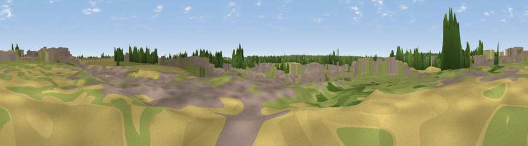

Sunset view
#44085 in England · top 67% of its area beats it · near PostwickThe view, rendered

A 360° render of this exact spot computed from the terrain model, tree cover and land cover — summer colours, afternoon light, calibrated against photographs of famous viewpoints. Real trees, hedges and buildings will differ in detail.
The panorama
Grey silhouette: terrain skyline in each direction (720 bearings, Earth curvature and refraction included). Dashed green: skyline with trees (+15 m) and buildings (+8 m) as obstacles. Blue strip: how far the ground is visible on each bearing.
Where the view opens
Wedge length = distance to the farthest visible ground on that bearing (vegetation-aware). Rings at 10, 25 and 50 km.
What fills the view
31% grassland · 27% woodland · 27% cropland · 14% built-up ·
Angular shares of the visible panorama (visual magnitude), not map area. Landscape diversity 0.61 (0–1 Shannon).
Key numbers
More beautiful places nearby
The staircase of upgrades: each row has a higher view potential than everything closer. Driving times are estimates from straight-line distance, calibrated against real road routing — check an actual route before setting out.
| Place | Direction | Drive | Score |
|---|---|---|---|
| Viewpoint near Witton | E · 2 km | ~6 min | 26.3 |
| Viewpoint near Norwich | W · 5 km | ~10 min | 32.5 |
| Strumpshaw Hill | ESE · 6 km | ~13 min | 34.5 |
| Viewpoint near Paston | N · 27 km | ~43 min | 56.1 |
| Viewpoint near Mundesley | N · 28 km | ~44 min | 58.9 |
| Viewpoint near Trimingham | N · 30 km | ~47 min | 62.4 |
| Viewpoint near Sidestrand | N · 32 km | ~49 min | 65.3 |
| Viewpoint near Overstrand | N · 33 km | ~51 min | 67.5 |
52.62770, 1.38392 · source: osm viewpoint · position refined by local search. Computed location — check access rights before visiting.